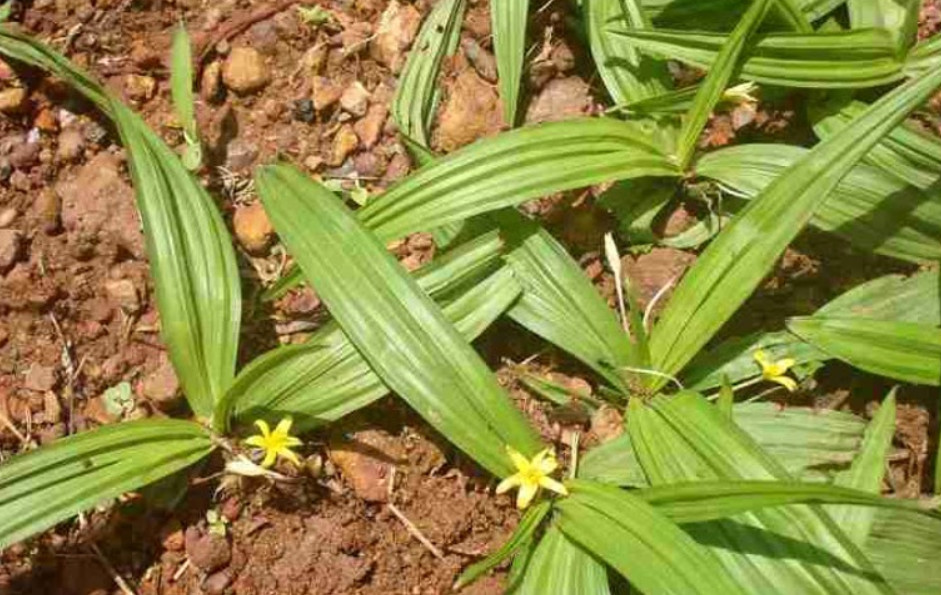
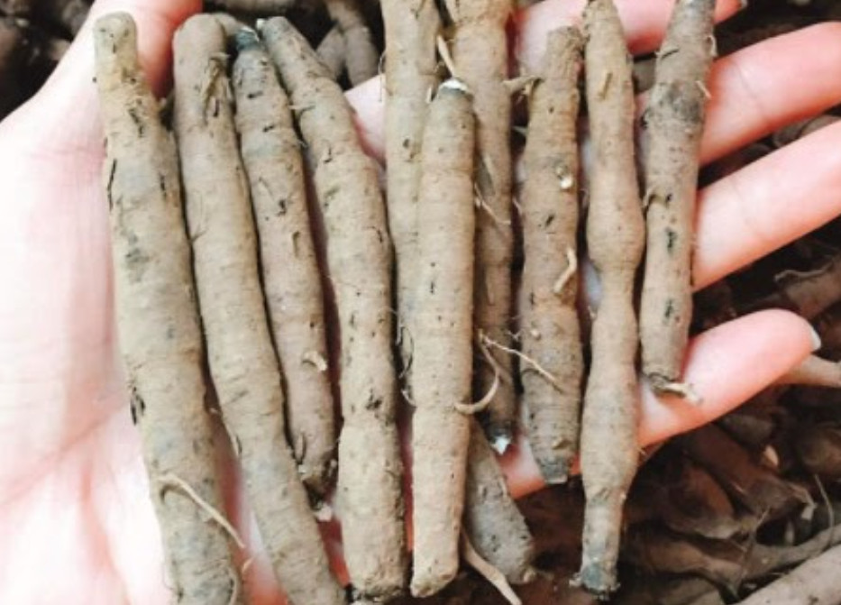

Sâm cau đen có tác dụng gì¶
Sâm cau đen (tiên mao) vị thuốc nam điều trị liệt dương nổi tiếng được dân gian ca ngợi, sử dụng cách đây hàng trăm năm. Các cuốn sách cổ đều có ghi chép về công dụng của tiên mao. Tuy nhiên rất ít người biết và sử dụng. Ở bài viết này xin giới thiệu tới quý vị và các bạn về công dụng, cách dùng sâm cau đen.
Sâm cau đen - tiên mao còn có tên gọi khác là tiên mao, ngải cau, sâm cau rừng…. Đây là một trong số rất ít những vị thuốc nam có công dụng bồi bổ sức khỏe, tăng cường sinh lý, điều trị liệt dương được ghi nhận trong cuốn sách nổi tiếng toàn thế giới – Cuốn “Những cây thuốc, vị thuốc Việt Nam” của giáo sư, Tiến sỹ Đỗ Tất Lợi.
Tên khoa học¶
Curculigo orchioides Gaertn. Thuộc họ thủy tiên
Khu vực phân bố¶
Cây sâm cau đen mọc hoang hóa ở các vùng đồi núi nước ta. Hiện mới phát hiện sâm cau đen mọc ở một số tỉnh Tây Bắc như: Hòa Bình, Sơn La, Ninh Bình, Yên Bái, Lào Cai, Tuyên Quang.
Chưa thấy cây mọc ở đồng bằng, hiện nay cây sâm cau vẫn chưa được trồng đại trà. Toàn bộ nguồn nguyên liệu đều dựa vào việc khai thái ngoài thiên nhiên.
Bộ phận dùng¶
Củ sâm cau chính là bộ phận được dùng làm thuốc.
Cách chế biến và thu hái¶
Là loài cây cỏ mọc lâu năm, người dân thu hái củ sâm cau quanh năm. Nhiều nhất vào thời gian từ tháng 9 đến tháng 12 hàng năm, đây là thời điểm củ sâm cau có chất lượng tốt nhất.
Thành phần hóa học¶
Trong củ có rất nhiều hoạt chất quý như: Hoạt chất Saponin, phytosterol, phenolic glycosid, lignan và rất nhiều axit amin.
Tính vị¶
Sâm cau đen có vị hơi cay, tính ấm. Vào 2 kinh tỳ, thận.
* Công dụng điều trị bệnh của sâm cau đen¶
Theo y học cổ truyền sâm cau đen có một số tác dụng chính sau:
Điều trị liệt dương
Điều trị yếu sinh lý
Điều trị xuất tinh sớm
Điều trị chứng thận dương hư
Bồi bổ cơ thể, tăng cường miễn dịch
Mạnh gân xương
Điều trị thần kinh suy nhược
Đối tượng sử dụng¶
Người mắc chứng thận dương hư (Lưng đau, gối mỏi, lưng bị lạnh, suy nhược cơ thể, gầy xanh xao)
Nam giới bị suy giảm chức năng sinh lý
Người sức khoẻ yếu, nhanh mệt
Nam giới tuổi trung niên, suy giảm nội tiết tố, mãn dục nam
Người bình thường không bệnh tật gì nên sử dụng sâm cau để tăng cường sức khỏe, tăng khả năng yêu, tăng bản lĩnh trước chị em
Cách dùng, liều dùng¶
Sâm cau đen có thể dùng theo 2 cách là ngâm rượu hoặc sắc nước uống. Cách dùng cụ thể như sau:
Cách ngâm rượu sâm cau đen tươi:¶
Chuẩn bị: 1kg sâm cau đen tươi, 3 lít rượu 45 độ, 1 bình thủy tinh hoặc sành sứ loại miệng lớn.
Cách ngâm: Củ sâm cau ta để nguyên củ cho đẹp, rửa sạch thật sạch (đặc biệt là các kẽ rễ), để dáo nước, tráng qua rượu 1 lần sau đó bỏ vào bình ngâm. Đổ ngập rượu, đậy nắp bình rồi ngâm trong thời gian 1 tháng trở lên là dùng được.
Cách dùng: Dùng trong mỗi bữa ăn, mỗi bữa uống 2 – 3 ly nhỏ.
Cách sắc uống¶
Nếu không dùng được rượu bạn áp dụng cách sắc uống như sau:
Có thể dùng tươi hoặc khô.
Tỷ lệ: Sâm tươi 20g (khô 10g thái mỏng) đun với 500ml nước, đun cạn còn 300ml chia 2 lần uống trong ngày.
Sâm cau đen đang là sản phẩm Hot được nhiều anh em tin dùng bởi hiệu quả tuyệt vời của vị thuốc này. Công dụng của sâm cau đen đã được y học cổ truyền công nhận, điều đó chứng tỏ những kết quả của nền y học cổ truyền nước ta vẫn nguyên giá trị.
Mua sâm cau đen ở đâu, địa chỉ bán tiên mao ?¶
Sâm cau đen hiện có trữ lượng khá dồi dào tại Hà Giang, hiện nay chúng tôi đang tiến hành thu mua của người dân vùng cao ở dạng củ tươi nguyên củ. Sản phẩm sạch, có chất lượng rất tốt. Dưới đây là một số thông tin về vị thuốc:
Giá sâm tươi 150.000đ/kg
Giá sâm khô 400.000đ/kg
Xuất xứ: Hà Giang
Tình trạng: Thu hoàn toàn từ rừng tự nhiên
Quy cách đóng gói: Túi nilon 1kg
Hình thức bảo quản: Nguyên củ khô hoặc thái lát
Có gửi hàng trên toàn quốc
Ngoài vị sâm cau đen ta còn vị sâm cau đỏ cũng có cùng chung 1 tác dụng. Các bạn có thể tham khảo thêm thông tin về sâm cau đỏ tại đây.
Nếu thấy bài viết hữu ích, hãy chia sẻ cho bạn bè người thân của các bạn bằng cách nhấp vào biểu tượng Facebook ở phía dưới bạn nhé.
Nếu thấy bài viết trên có ích, các bạn hãy chia sẻ trên Facebook cho người thân và bạn bè mình biết nhé. Cảm ơn bạn!
Liên hệ mua sam cau den - tien mao¶
Liên hệ qua điện thoại hoặc Zalo số: 0932.340.345 hoặc số 0964.421.551
Địa chỉ: Số nhà 23a ngõ 137 đường Bát Khối, Phường Long Biên, Quận Long Biên, Hà nội
Sâm cau đen có tốt không?¶
Sâm cau đen - Tiên mao là một thảo dược không thể thiếu trong các thang thuốc ngâm rượu của chúng tôi. Bạn có thể tìm thấy sâm cau đen trong thang thuốc của chúng tôi như:
Video: Tác dụng của sâm cau đen¶
Tổng hợp các video về minh mạng thang¶
https://www.youtube.com/playlist?list=PLejr7_EdIH0ckym84da8girAdIaybLA6d
Note
Liên hệ Hà Toại - Điện thoại, hoặc Zalo số: 0964.421.551 hoặc 0932.340.345
Địa chỉ: Nhà 23a, Ngõ 137 đường Bát Khối, phường Long Biên, quận Long Biên, Hà Nội
Điện thoại: 0932 340 345